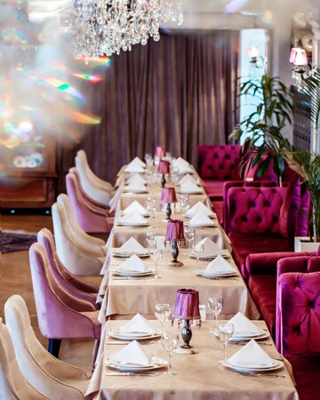

Our Food

About Us
- Our Service
- Every occasion big or small
- The Kitchen
- Comfort's Restaurant is a cozy and inviting culinary haven that takes pride in offering a warm and comforting dining experience. Nestled in a welcoming atmosphere, the restaurant is dedicated to providing a diverse menu that caters to various tastes and preferences, ensuring there's something for everyone. The menu at Comfort's Restaurant reflects a commitment to delivering delicious, home-style comfort food with a modern twist. From hearty classics to innovative culinary creations, each dish is crafted with care and attention to detail, using fresh, high-quality ingredients sourced locally whenever possible. The ambiance of Comfort's Restaurant is designed to create a relaxing and enjoyable setting, making it an ideal place for intimate gatherings, family meals, or a cozy dinner for two. Whether guests are seeking a casual lunch, a celebratory dinner, or simply a comforting cup of coffee with a decadent dessert, Comfort's Restaurant is dedicated to providing a memorable and delightful dining experience. The friendly staff and warm atmosphere make it a go-to destination for those seeking a taste of home away from home.
- What we offer
- We offer delivery or pick up
- Price
- We make sure our food is affordable for everyone